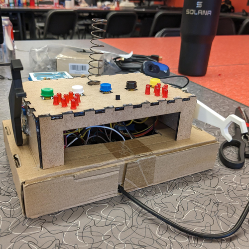
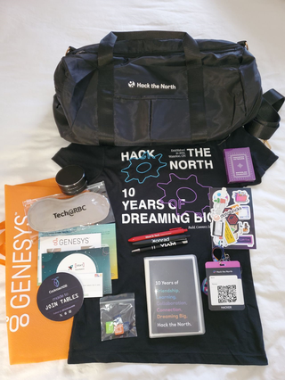
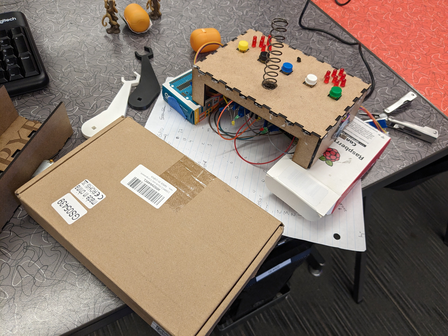

a project over a single weekend?
I had an incredible experience at HackTheNorth, Canada's largest hackathon. The event, the University of Waterloo, brought together 1,000 hackers from Canada and around the world. The HTN team did an amazing job, celebrating their 10th anniversary with custom stickers and unique digital tickets.
On top of trying to collect all the swag from the sponsors, I attended workshops and activities, including the OpenAI, intro to embedded systems, and hacking the brain workshops. With the help of lots of snacks, a couple cups of coffee, and maybe an energy drink or two, I must say that the 36 hours of hacking flew by. This was an experience I would never forget meeting the countless people that simply either wanted to grow their network, build a project over a weekend, collect some swag, or a little bit of everything. Looking forward to the next!
Have you ever had days when you wished you could log how you're feeling, especially when dealing with the challenges of mental health? Mental well-being can be a complex journey, and finding the right tools to navigate it can be even tougher. But what if there was a simple metric that could help you gain clarity on those difficult days? When anxiety or stress seem overwhelming, it's easy to lose sight of the bigger picture. Imagine having the ability to track and understand your emotional state in a straightforward way. When I faced my own mental health struggles, I yearned for a clear way to measure my well-being and communicate it effectively to professionals. Experience is subjective, but data can provide that much-needed clarity.
Introducing Psyche Tracker, a revolutionary project inspired by the charm of WALL-E and designed to be your personal friend for managing emotions, stress, and focus. Like a trusted companion, Psyche Tracker records your moods and facial expressions, helping you gain a deeper understanding of your mental well-being. With the ability to analyze mood, temperature, and focus, this device becomes your ally in the journey to emotional balance and improved mental health. Psyche Tracker aims to provide the support and insights you need, just like a friendly robot friend, to help you navigate the ups and downs of life.
This devices records your mood whenever you feel like recording it.
There are three mood options to choose: high, neutral, and low. While
this measure is coarse, it also allows the user to choose quickly
without overthinking or being overwhelmed by options. This device also
records this data with only the tap of a button that does not require
the use of a cellphone. This was sought intentionally, as personal
devices are often filled with distracting or distressing notifications.
Sometimes it's useful just to check in without struggling to find the
energy or wade through a sea of distractions.
The device also features two buttons related to focus. Another common
mental health issue is feeling regularly unfocused. This can easily
spiral into assuming it is impossible to focus, when perhaps there was a
great deal of energy put towards focusing recently. This is also a
valuable metric to track for a student's mental health.
This devices has a few additional data collection points. There is a
mounted camera that has been trained to assess mood based on facial
expression. There is also a temperature sensor meant to capture skin
temperature during mood recording. Together, the mood, temperature, and
facial expression are meant to feed into a larger algorithm. This data
was stored using Mongo and then prepared for eventual use in a neural
network as well as Mongo Atlas. Overtime, more associations could be
made that will further aid in understanding the effects mental health
has. How valuable would it be to gain insight as to ones mental state by
a correlation with a non invasive temperature measurement?
We focused on using open source materials so that we could focus on
creating a cohesive unit. The system is controlled by a raspberry pi 3
and an arduino leonardo. The computer vision model was developed using
tensorflow. The housing was created primarily with laser cut pieces with
some fanciful 3d printed additions.
We wanted to make this device functional, but we also wanted to make it
pleasant. The camera is mounted on a spring to create a "bobble head" to
amuse the user during a mental health episode. There are LEDs in the
shape of hearts that light up when the user indicates that their mood is
low. The two robot arms have unique movements that respond to the
neutral mood indicator and focus mode.
We wanted this device to feel like something of a companion. A cute
enhancement to a desk space that provides valuable insights about the
user.
Primarily time. There are some integration steps not yet implemented due
to a lack of time. We tried to dream feasibly, but still managed to get
caught up in what we wanted this to be.
Specifically, the computer vision model took it's time to train. This is
not surprising but difficult to mitigate. It is difficult to speed up
training and maintain model integrity.
There were a few errors along the way! Design choices that were
abandoned part way through because while they were desired, they were
taking more time than could be allotted.
Focused on ensuring the creation of robust and durable electrical connections and circuitry for the button inputs, integrating a temperature sensor into the device for skin temperature data collection, and assisting this 3-member team to complete the project within a tight 36-hour timeframe while ensuring successful hardware and machine learning integration.

We are proud of the functionality of our project and of how much we
learned. Our design is well made given the time constraints and should
already stand up to extended use. Furthermore, we set the ground work
for alot of further development. The analysis of the harvested data
could lead to much more exploration in the realm of passive mental
health assessment.
We're proud of how we operated as a team. None of us knew eachother
before this, but we were able to come together and communicate
effectively to create a project we're all quite satisfied with.
We learned how to generate ideas together. We learned new technologies that we hadn't used before - specifically implementing interrupts for the buttons was an interesting endeavour! We learned how to design mechanically well during a hackathon - and the answer is laser cutting. 3D printing is glamorous, but the speed of laser cutting simply can't be beat. We learned to get creative with what we had on hand. We found it difficult to check out the hardware items we were looking for and so we needed to get creative with what we had.
More design iterations. There are little aspects of many parts of the build that could be improved. Finetuning what we have done so far will go a long way to elevate this project into something truly special. After that, the project would benefit from more sensors that have investigated links to mental health. Then, all of that data can come together to create the data set describing the physical effects of mental health on a day to day basis.